記述統計
DescStats
概要
Originは基本統計（平均、中央値、分散など）、度数カウント、選択したデータの相関係数を含む様々な記述統計をサポートしています。強力なグラフ作成機能に加えて、Originの統計ツールはデータをまとめたり、分析するのに役立ちます。
学習する項目
このチュートリアルでは、以下の項目について解説します。
- 列の統計ダイアログを使って、グループ化したデータの記述統計を計算する
- さらなる処理のために、新しいワークシートに統計結果をコピーする
- 指定した列の属性を使ってワークシートデータをソートする
- 相関係数ツールを使ってデータセットを分析する
必要なOriginのバージョン: Origin 2015 SR0以降
グループに対する度数情報を検索する
離散度数ツールを使って、データの度数情報を素早く取得することができます。
- ワークブックを新しく作成します。メニューのデータ：ファイルからインポート：ASCIIファイルを選択し、\Samples\Statistics\automobile.datをインポートします。
- automobileワークシートで最初の2列を選択します。メインメニューの統計：記述統計：離散度数表を選択し、ダイアログを開きます。
- 再計算モードはドロップダウンから自動を選択します。元データシートのカテゴリー値をコントロールするが動くように、データのソートをカテゴリー順に変更します。OKをクリックします。
- 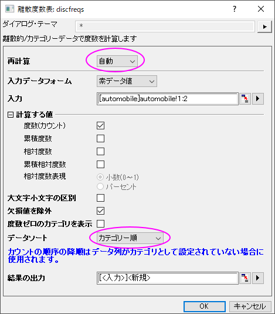
- 結果シートDiscretFreq1に、YearとMake列のデータ項目と度数カウントがそれぞれ出力されます。
 | 各列には鍵マークが表示されていますが、目的の列を選択、メニューバーに移動し、ワークシート：ソート(ワークシート)から、昇順、降順、またはカスタムを選択することで、ワークシートを再配置できます。
|
グループ化したデータの記述統計を計算する
列の統計ツールを使用すると、各列のデータそれぞれの基本統計を計算できます。
- ワークシートautomobileに戻ります。 メインメニューの統計：記述統計：列の統計を選択し、ダイアログを開きます。
- 列の統計ダイアログで、入力タブの範囲1ブランチを開き、データ範囲の右側にある
 ボタン をクリックします。 ダイアログが小さくなりますので、ワークシートに戻って列Cから列Gまでのデータ範囲をドラッグで選択してセットします。小さくなったダイアログにあるボタンをクリックし、ダイアログを元に戻します。 ダイアログボックスで、範囲１の下にある 入力データを調整した後、グループ制御ボックスの右上にある矢印をクリックし、B(Y): Make をグループデータとして選択します。再計算モードはドロップダウンから自動を選択します。
ボタン をクリックします。 ダイアログが小さくなりますので、ワークシートに戻って列Cから列Gまでのデータ範囲をドラッグで選択してセットします。小さくなったダイアログにあるボタンをクリックし、ダイアログを元に戻します。 ダイアログボックスで、範囲１の下にある 入力データを調整した後、グループ制御ボックスの右上にある矢印をクリックし、B(Y): Make をグループデータとして選択します。再計算モードはドロップダウンから自動を選択します。
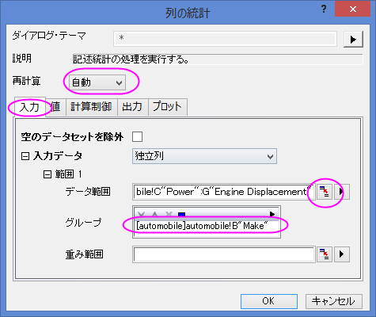
- 出力設定ノードを開き、さらにグラフ配置ノードを開きます。グラフ中の同じ形式のプロットを配列にチェックを付け、プロットノードを開いてボックスチャートをチェックします。
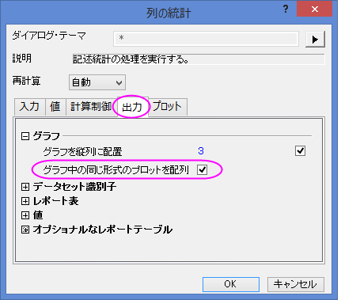
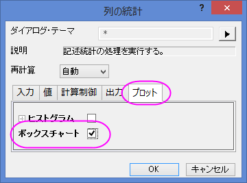
- OK をクリックし、レポートシートに結果を表示します。
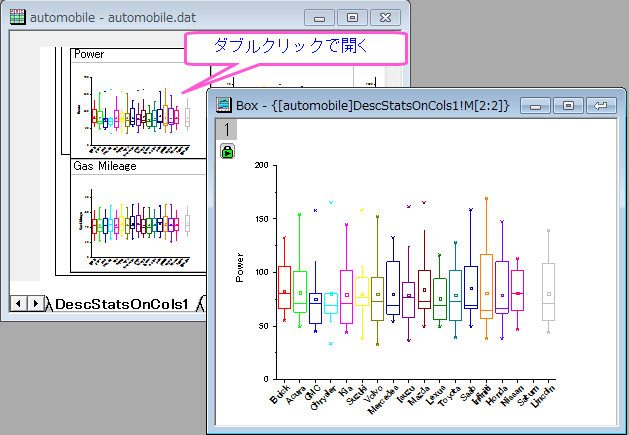
| レポートシート内の埋め込みボックスプロットを編集するためには、そのボックスプロットをダブルクリックして開きます。グラフを編集したら、開いたグラフウィンドウの右上にある戻るボタンをクリックし、レポートシートに編集したグラフを戻します。
|
統計計算結果を使って、さらに操作を続ける
統計結果をさらに分析したり、統計結果をプロットすることができます。
例えば、Makeが1992から2004までの自動車の属性値(馬力、0-60mph時間、重量、燃費)の平均を取得し、以下を実行します。
- ワークブックautomobile - automobile.datに戻り、DescStatsQuantities1シートを開きます。 列D(Y2) とE(yEr±) を選択し、メインメニューのワークシート：列アンスタッキングを選択してダイアログを開きます。
- wunstackcolダイアログで、再計算モードを自動に設定し、グループ列ではコンテキストメニューボタン
 をクリックしてA(X1) データを選択します。
をクリックしてA(X1) データを選択します。
- オプションノードを開き、その他の列を含めるチェックボックスにチェックを入れます。 その他の列でボタンをクリックして表示されるコンテキストメニューから列B:(X2) Makeを選択します。その他の列値のためにルールを抽出では最長グループ一致を選択し、出力設定ノードではグループ情報の入れ先でロングネームを選択します。OKをクリックします。
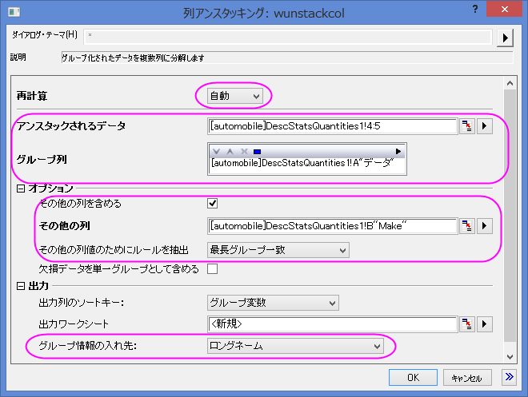
- 結果を視覚化するために、グラフを作図します。結果シートUnstackCols1を開き、ワークシート全体を選択してメインメニューの作図: 複数区分/軸: 積み上げグラフを選択して作図します。
- 積上げ:plotstackダイアログボックスでプロットタイプを散布図に設定します。 OKをクリックします。
- ここで、明確にするために、上部X軸で目盛りラベルを回転させます。 X 軸ラベル上でダブルクリックして開く軸ダイアログで上アイコンを選択した状態で下図のよう設定します。OKをクリックします。
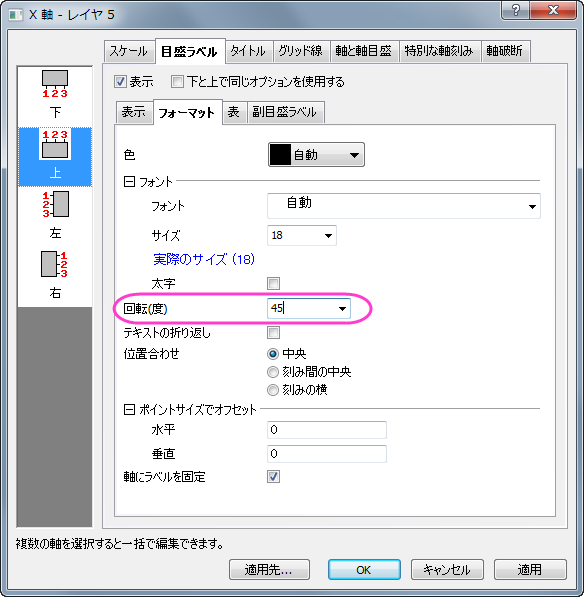
同じ要領で、下のラベルも同じように回転させます。
- レポートシートとグラフは下図のようになります。
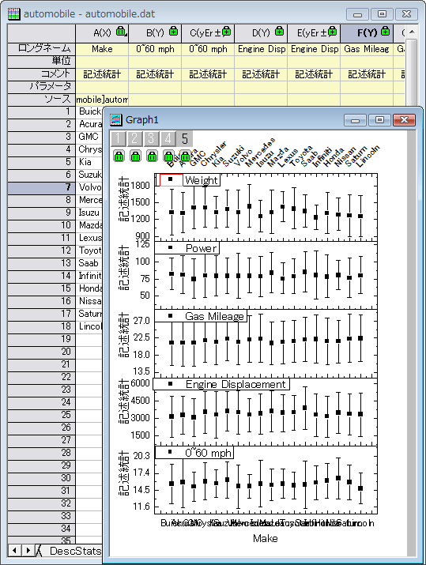
異なるインジケータ間の関係を分析する
相関係数を使って自動車のデータの列間の関係を調べることができます。次に、信頼楕円を使用して散布図を作成し、相関関係をグラフィカルに表現します。
- ワークブックautomobile - automobile.datのautomobile シートを開き、最後の5列を選択します。
- メインメニューの統計：記述統計：相関係数を選択し、ダイアログを開きます。 開いた相関係数：rcoef ダイアログで相関タイプをピアソンにします。
- プロットノードを開き、信頼楕円の追加チェックボックスにチェックを入れます。散布図チェックボックスは自動的にチェックされます。 OKをクリックします。
- ScatterMatrix1 と CorrCeof1 は次のようになります。 Engine Displacement と Powerには正の強い相関があり、Gas Mileage と Engine Displacement.には負の強い相関があることがわかります。
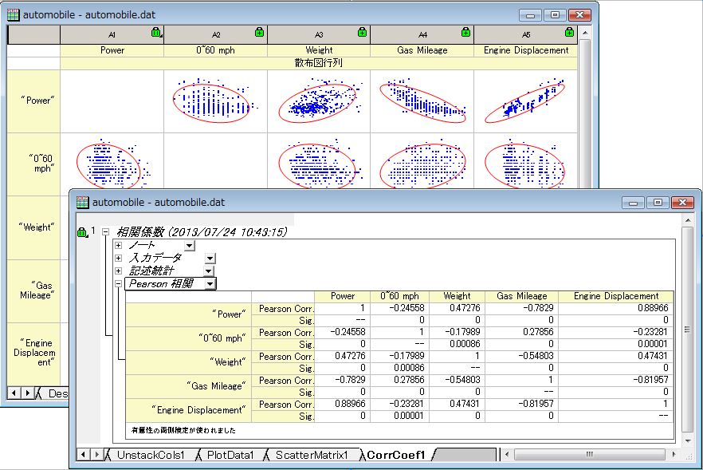
カテゴリー値のコントロールする
- 以下のステップで、元データを変えずに、グラフに表示されている値の順番を変更します。ワークブックの列Bで右クリックしてコンテキストメニューでカテゴリーとして設定を選択します。列のカテゴリーセルにある「ソートなし」をダブルクリックしてカテゴリーダイアログを開きます。
- 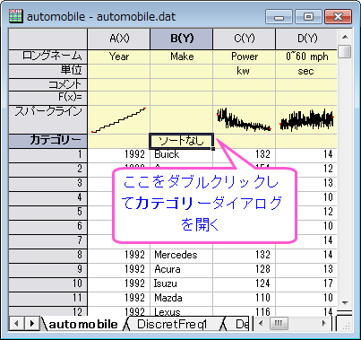
- カテゴリーの編集にチェックを入れ、矢印ボタン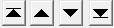を使ってそれぞれの項目の位置を以下の図のように設定します。これにより、製造元がある国順(アメリカ→日本/韓国→ヨーロッパ)に並び替えます。OKをクリックしてダイアログを閉じます。
- 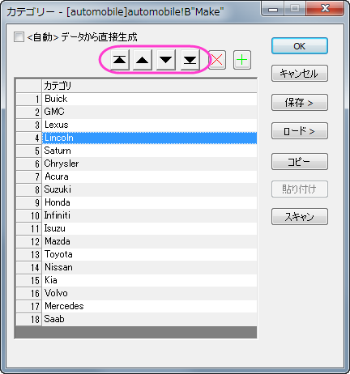
- 上記セクションで作成したレポートシートを確認すると、並び順に反映されていることが分かります。再計算モードで自動が選択されているため、度数離散表と列の統計のレポートシート(ボックスチャートを含む)は自動的に更新され、カテゴリーデータで指定した並び順になります。
- 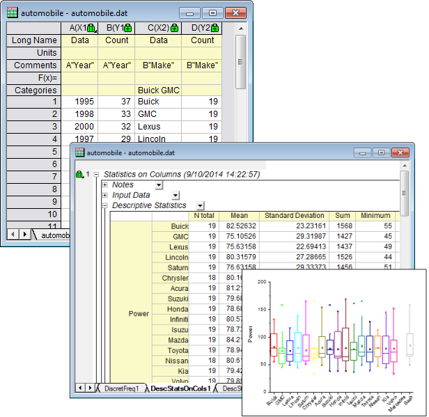
- 列アンスタッキングを行った結果とグラフも自動的に更新されます。
- 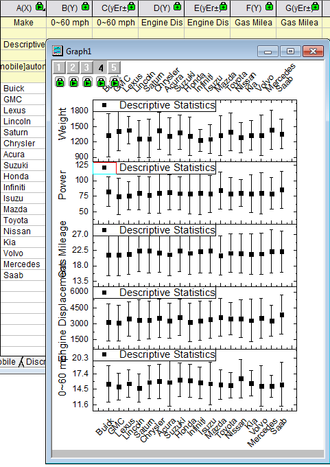
結果が自動的に更新されていない場合、手動で更新させる方法もあります。標準ツールバーの再計算ボタン をクリックすると、更新します。再計算が行われるとボタンが緑色 をクリックすると、更新します。再計算が行われるとボタンが緑色 になります。 になります。
|